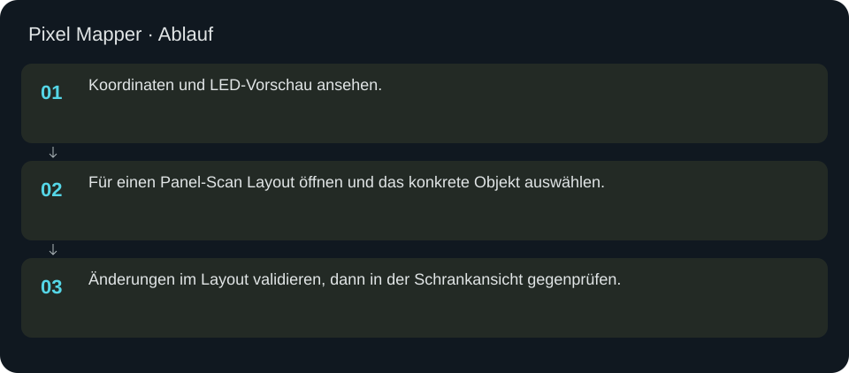
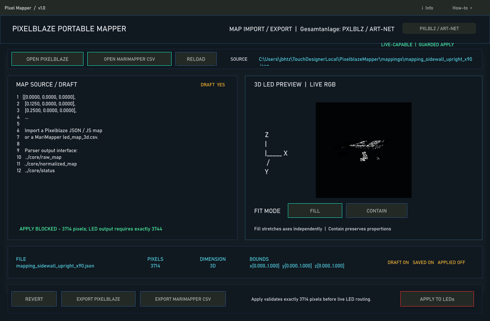

Pixel Mapper
Bestehende Mapping-Ansicht zum Prüfen der LED-Koordinaten. Neue Panel-Geometrie wird über Scan und Layout integriert.
In welcher Reihenfolge?
- Koordinaten und LED-Vorschau ansehen.
- Für einen Panel-Scan Layout öffnen und das konkrete Objekt auswählen.
- Änderungen im Layout validieren, dann in der Schrankansicht gegenprüfen.


Schritt für Schritt
Panel 8
Die Installation behält 299 adressierbare Plätze für Panel 8. 296 davon besitzen neue Messpositionen; lokale IDs 1, 61 und 93 bleiben ohne Messposition und schwarz. Diese Lücken dürfen weder aufgefüllt noch durch Umnummerieren verschoben werden.
Koordinaten
Im aktuellen Layout gilt X = Höhe, Y = rechts und Z = Tiefe. Für das ersetzte Panel zeigt das Dreieck nach unten; seine kürzere Seite zeigt zur Schrankmitte. Die Bildschirmprojektion ist keine neue Messung.
Eingaben & Beispiele
Dieser Bildschirm benötigt für den beschriebenen Prüfablauf keine Texteingabe.
Woran erkenne ich Erfolg?
Die erwartete Ansicht öffnet, Status und Vorschau entsprechen der gewählten Aktion, und es erscheint kein Fehler. Änderungen beim nächsten Laden beziehungsweise im Live-Status erneut lesen. Ein erfolgreicher Bildschirmtest beweist weder physische LED-Ausgabe noch korrekte Kameramessung.
Quellennachweis
Dateipfade im Projekt-Repository; die Onlinehilfe gibt keinen allgemeinen Dateisystemzugriff frei.
pixelblaze_mapper/build_led_preview_contract.pypixelblaze_mapper/build_layout_scene_ui.py
Dialog: /project1/pixelblaze_mapper/ui/canvas